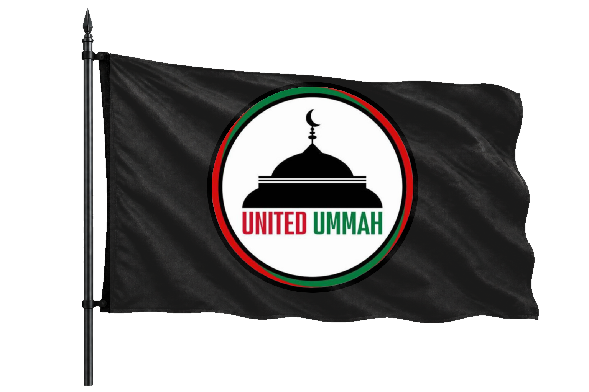

A place of worship.
The Center Of Islamic Life
THE MASJID HAS ALWAYS BEEN THE CENTER.
The Masjid has always been the center of Islamic life.
A place of learning.
A place of unity.
A place of guidance.
A place where hearts reconnect with Allah.
A place where the Ummah is reminded of its purpose.
A place where Muslims are prepared to live with responsibility.
But in many places today, the Masjid has become disconnected from the deeper rebuilding of the Ummah.
People come.
They pray.
They leave.
Children go to Madrassahs.
They read Qaida.
They complete Nazra.
Some begin Hifz.
But many grow up reading the words of the Quran without understanding what Allah is saying to them.
They learn how to recite. But not always how to live.But often without a complete foundation of Deen, Seerah, Akhirah, Islamic systems, and responsibility towards the Ummah.
United Ummah believes this gap must be addressed with wisdom, respect, and structure.
Not by disrespecting Masjids.
Not by fighting Imams.
Not by attacking Madrassah teachers.
Not by creating conflict with committees.
But by supporting the existing system and strengthening it from within.The Purpose Of This Front
STRENGTHEN WHAT ALREADY EXISTS.
Masjid And Madrassah Revival is one of the first practical fronts of United Ummah.
The purpose is to help revive Masjids and Madrassahs as centers of Quran understanding, Deen foundation, Islamic learning, community strength, and preparation.
This front does not aim to replace the existing Madrassah system.
It aims to strengthen it.
If a child is learning Qaida, he should continue.
If a child is doing Nazra, he should continue.
If a child is doing Hifz, he should continue.
But alongside that, he should also understand what he is reading.
He should know the life of the Prophet Muhammad ﷺ.
He should know the stories of the Prophets.
He should understand Salah.
He should understand Akhirah.
He should understand basic Islamic laws.
He should understand that Islam is not only personal worship.
He should understand that Islam gives guidance for the individual, family, society, economy, justice, leadership, and the Ummah.
A Muslim child should not grow up disconnected from the meaning, purpose, and responsibility of the Quran.
This is why Masjid And Madrassah Revival matters.The Problem We Are Addressing
VALUABLE WORK. A CLEAR GAP.
The current Madrassah system in many local areas does valuable work.
It teaches children Quran reading.
It teaches Qaida.
It teaches Nazra.
It teaches Hifz.
It teaches Masnoon Duas.
It teaches Salah reading.
This work is important and must be respected.
But the gap is clear.
Many children complete Quran reading without understanding the Quran.
Many memorize without knowing what Allah is saying.
Many learn religious routines without understanding the larger purpose of Islam.
Many grow up knowing how to recite, but not how to connect that recitation with life.
This is not a criticism of sincere teachers.
This is a problem of structure.
The existing system needs support.
It needs a parallel foundation.
It needs a curriculum that helps children understand Deen in a clear, practical, and age appropriate way.
United Ummah wants to help fill this gap.The Solution
DO NOT REMOVE. ADD.
The solution is not to remove what already exists.
The solution is to add what is missing.
United Ummah aims to introduce a Deen Foundation style curriculum alongside the existing Madrassah system.
The existing Quran reading, Nazra, Hifz, and basic learning can continue.
Alongside it, students can be taught Quran understanding, Seerah, Prophetic stories, Khulafa e Rashideen, Salah understanding, Akhirah, Islamic values, basic Islamic laws, and Islam as a complete way of life.
This gives the child both recitation and understanding.
Both memory and meaning.
Both knowledge and direction.
Both worship and responsibility.
A Madrassah student should not only become someone who can read the Quran.
He should become someone who understands the Quran enough to let it shape his life.
The Approach
MOVE WITH ADAB.
United Ummah does not enter a Masjid with arrogance.
United Ummah does not enter a Madrassah with blame.
United Ummah does not go to Imams or committees saying that everything is broken and only we have the solution.
That approach is wrong.This front must move with adab, wisdom, patience, and respect.
The approach is simple.
The purpose is to show that this curriculum can help the children, support the Madrassah, strengthen the Masjid, and benefit the local community.
The Local Level Process
ONE COMMUNITY AT A TIME.
This work begins at the local level.
A trained member or local team identifies a nearby Masjid or Madrassah where this revival work can begin.
The first step is to approach the Imam Sahab respectfully with a written appeal and explain the purpose of the curriculum.
If Imam Sahab agrees, the curriculum can begin with proper coordination.
If Imam Sahab does not agree, the matter can be taken respectfully to the Masjid or Madrassah committee.
If the committee agrees, the curriculum can begin with their permission.
If the committee does not agree, the appeal can be taken to the society office or relevant local authority connected with the Masjid or Madrassah.
If permission is still not given, local support can be built through parents and community members.
A petition can be prepared.
Parents of Madrassah children and concerned local Muslims can sign in support of adding Quran understanding and Deen foundation learning alongside the existing system.
With this support, the appeal can be presented again to the Imam Sahab, committee, or society office.
The goal is not pressure for conflict.
The goal is responsible community demand for better Islamic learning.
If permission is still not given, United Ummah can start a local physical Deen Foundation Program batch with available students and families, while continuing the work in the next area.
This front moves with patience.
One Masjid.
One Madrassah.
One local team.
One community at a time.
Local Level Appeals And Petitions
CLARITY FOR LOCAL EXECUTION.
United Ummah has prepared local level appeals and petitions to help teams approach Imams, committees, society offices, parents, and community members with clarity and structure.
These documents are meant to support respectful local execution.
DOCUMENT LIBRARY
Open Documents
Local Level Appeals And Petitions:
What A Local Team Needs
START WITH WHAT YOU HAVE.
This front does not need huge resources to begin.
It needs sincerity.
It needs discipline.
It needs a trained member.
It needs basic curriculum structure.
It needs communication.
It needs patience.
In the beginning, even one laptop and one serious member can help start the work in a local Madrassah or physical batch.
The team must know how to explain the purpose clearly.
They must know how to speak with respect.
They must know how to handle rejection without anger.
They must know how to build local support.
They must know how to keep the work clean, disciplined, and focused.
This is not a campaign for noise.
This is local revival work.Why This Matters For Preparation
THE MASJID MUST BECOME A CENTER OF PREPARATION AGAIN.
Preparation for Imam Mehdi cannot happen while Masjids remain disconnected from community rebuilding.
It cannot happen while children read the Quran but do not understand its message.
It cannot happen while Muslims pray together but remain socially scattered.
It cannot happen while our religious spaces are active in routine but weak in deeper training.
The Masjid must become a center of preparation again.
The Madrassah must become a place where children are not only taught to read, but taught to understand, live, and carry the message of Islam.
If the Ummah is to be rebuilt, the revival must reach the places where Muslims already gather.
That is why this front begins with Masjids and Madrassahs.The Role Of United Ummah Members
REBUILD YOURSELF FIRST.
Members who want to work in Masjid And Madrassah Revival must first enter through the Deen Foundation Program.
A person cannot call others towards foundation while ignoring his own.
The member must rebuild himself first.
He must understand the mission.
He must learn discipline.
He must become consistent.
Then he can move towards local execution.
This protects the work from emotional chaos.
It ensures that members do not enter Masjids with anger, ego, or confusion.
They enter with training.
They enter with adab.
They enter with clarity.
They enter with responsibility.
START WITH THE FOUNDATION
Register Now
Deen Foundation Program Registration Form:
What We Do Not Want
NO CONFLICT. NO DIVISION.
We do not want conflict inside Masjids.
We do not want disrespect towards Imams.
We do not want arguments with committees.
We do not want emotional teams damaging the work.
We do not want people entering religious spaces without training.
We do not want this front to become a source of division.
Masjid And Madrassah Revival must be done with wisdom.
If a door opens, we enter with gratitude.
If a door closes, we move with patience.
If people reject, we do not insult.
If people delay, we do not lose discipline.
This work is not about winning arguments.
It is about reviving the Ummah with maturity.What We Want To Build
LEARNING. UNITY. PREPARATION.
We want Masjids where Muslims do not only pray together, but learn together.
We want Madrassahs where children do not only read the Quran, but understand what Allah is saying.
We want communities where parents care about the Deen foundation of their children.
We want local teams that can support Imams instead of fighting them.
We want students who know Seerah, Akhirah, Salah, Quran meaning, Islamic values, and the purpose of life.
We want Masjids to slowly become centers of learning, unity, discipline, and preparation.
We want the next generation to grow with Deen foundation before the world shapes them without it.
This is not small work. This is foundation work.The Long Term Vision
START WITH ONE. THEN GROW.
In the beginning, this front may start with one Madrassah.
Then another.Then another.A few children.
Then more students.One local batch.
Then multiple batches.One trained member.
Then a local team.One community.
Then more communities.As the work grows, students who complete the learning can help support the next batch.
Local teams can become stronger.
Masjids can become more active.
Parents can become more involved.
Madrassahs can become more complete.
The long term vision is to create a respectful revival model that can move from one locality to another.
Not through force.
Not through noise.
Through clarity, service, patience, and structure.Support This Front
PRACTICAL WORK NEEDS PRACTICAL SUPPORT.
Masjid And Madrassah Revival needs practical support.
Laptops.
Printed appeals.
Printed petitions.
Curriculum material.
Student learning resources.
Local execution support.
Transport.
Coordination.
Training material.
If you want to support this front, continue to the Support Us page.
Support Us pageThe Revival Starts Locally
REBUILD FROM THE GROUND.
The Ummah will not be rebuilt only through online posts.
It will not be rebuilt only through speeches.
It will not be rebuilt only through reaction to tragedies.
It must be rebuilt from the ground.From the child.
From the family.
From the Masjid.
From the Madrassah.
From the local community.
This is why Masjid And Madrassah Revival is a core front of United Ummah.
The work is practical.
The approach is respectful.
The goal is serious.
Revive the Masjid.
Strengthen the Madrassah.
Rebuild the foundation.
Prepare the Ummah.
We prepare before we rise.
We build before we lead.
WE ARE UNITED UMMAH
